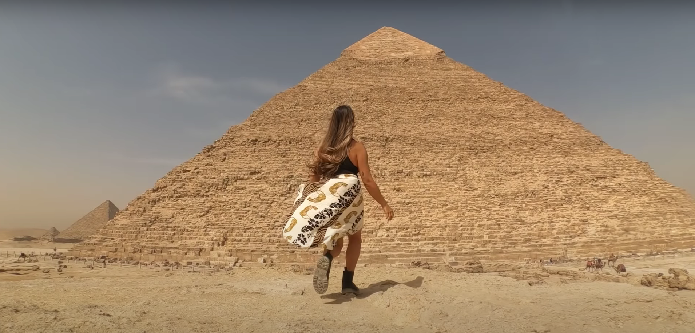
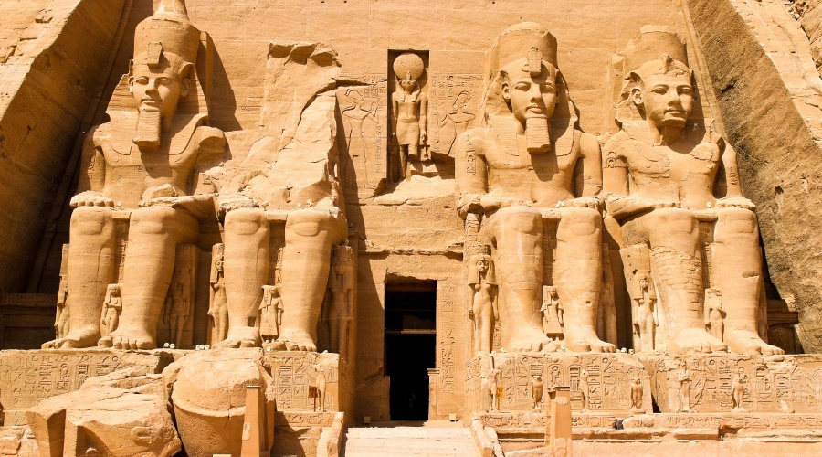
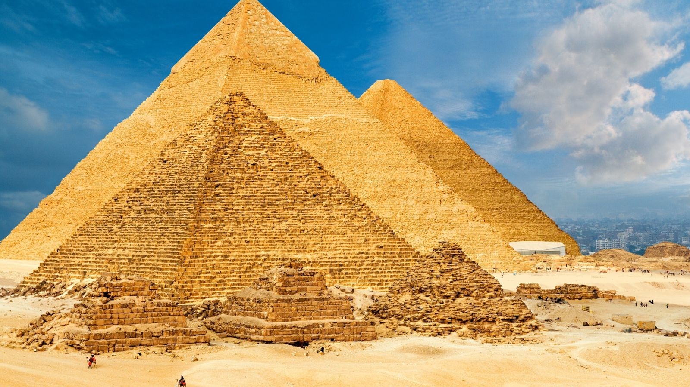
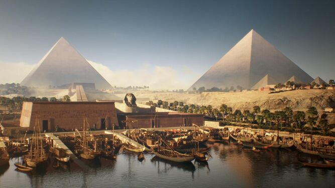

Descubre la maravilla de viajar por el mundo. ¡Haz clic para obtener más información!
Egipto

Hay un Egipto para cada viajero.
Y en nuestra agencia queremos que disfrutes del tuyo. A tu medida y a tu ritmo, acorde con tus expectativas.
Atractivos Turísticos




-
La Gran Piramide
-
Visita al Cairo
-
Templo de Ramsés II
-
Sarcofago de Tutankamón
Itinerario
Día 1: Rio Nilo
Un crucero por el Nilo: Esencial para visitar los principales templos faraónicos de forma práctica.
Día 2: Piramide de Giza
El interior de la pirámide de Giza. Leer más
Día 3: Pirámides y Necrópolis
Menfis, Saqqara y Dashur: Pirámides y necrópolis míticas de la civilización Egipcia.
Día 4: Valle de los Reyes
El Valle de los Reyes: Un ineludible en un viaje por Egipto y hogar de la Tumba de Tutankamón.
Día 5: El Cairo
El Cairo: Con lugares esenciales de visita como el Museo de Antigüedades egipcio.